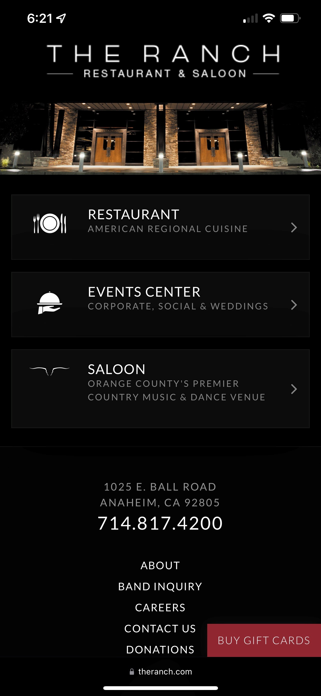
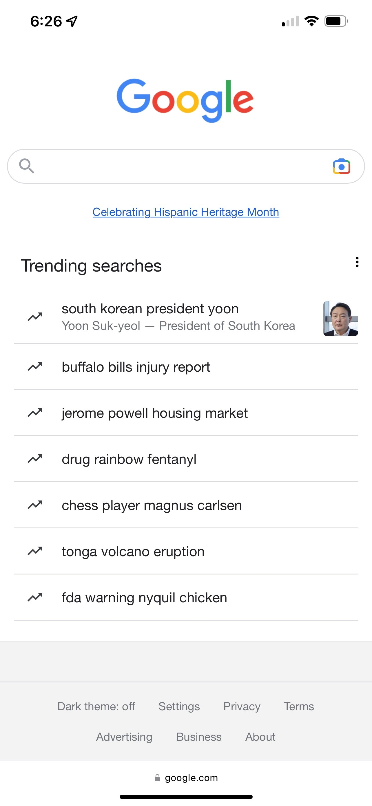

Contrast
The Ranch Restaurant and Saloon
theranch.com
This page has awesome contrast. White text on a black background grabs your attention and holds it. This make the site dynamic to look at and easy to focus on where they want you to look. Fonts are easy to see and read against the background.
Repetition
YouTube
m.youtube.comYoutube is the king of repetition. Every thumbnail and icon is the same. It doesn't matter how far you scroll down, the content all has the same format. This makes it easy to look at and continue scrolling.
White Space

White space rules this site. They have used minimal objects on the page to direct the user to the page function, which is the search. By keeping the page clean and clutter free, it is easy to see exactly what the page is designed to do and easy to use.